核心方法
从真实企业会话中恢复任务实例，经切分、合并、脱敏、fixture 恢复、提示词重写、沙箱预检和 judge routing，得到 852 个任务与 120 个 Lite 任务。评价同时包含文本、视觉和规则检查。
生成日期：2026-06-24（周三）
信息截止时间：2026-06-24 10:49 CST（UTC+8）
选择原因：该论文在上一份已发布日报（2026-06-22 10:36 CST）之后进入本轮检索范围，且直接面向企业真实工作流中的 agent benchmark。它不是合成玩具任务，而是从真实 workplace sessions 构造 852 个可复现任务，重点评估模型、harness、工具使用、交付物质量、成本、耗时和 skill transfer。
EnterpriseClawBench introduces a benchmark for enterprise agents built from proprietary real-world workplace sessions. The pipeline converts noisy sessions into 852 reproducible tasks with recovered fixtures, rewritten prompts, role classes, skill subclasses, hard rules, and semantic rubrics. Because the original sessions contain internal enterprise content, the benchmark data itself is not released; the reusable contribution is the construction and evaluation protocol. The Lite subset evaluates 32 harness-model combinations, and the best reported configuration, Codex with GPT-5.5, reaches only 0.663, indicating that enterprise artifact tasks remain far from saturated. The paper argues that agent evaluation should report harness-model pairs, artifact delivery, visual quality, cost, runtime, and skill-transfer behavior, rather than compressing performance into a single model score.
EnterpriseClawBench 提出了一个面向企业 agent 的 benchmark，其任务来源于专有的真实 workplace sessions。该流水线把噪声较大的会话转化为 852 个可复现任务，并为每个任务恢复输入文件、重写提示词、标注角色类别和技能子类，同时提供硬规则与语义评分 rubrics。由于原始会话包含企业内部内容，作者没有公开 benchmark 数据本身；可复用贡献主要是构造和评估协议。Lite 子集评估了 32 组 harness-model 组合，论文报告的最优配置是 Codex 搭配 GPT-5.5，得分仅为 0.663，说明企业交付物任务尚远未被当前 agent 解决。论文主张，agent 评估不应只压缩为单一模型分数，而应报告 harness-model 配对、交付物产出、视觉质量、成本、运行时间和 skill-transfer 行为。
从真实企业会话中恢复任务实例，经切分、合并、脱敏、fixture 恢复、提示词重写、沙箱预检和 judge routing，得到 852 个任务与 120 个 Lite 任务。评价同时包含文本、视觉和规则检查。
把企业 agent 的真实交付物纳入评测，而不是只测试问答或代码 patch；同时把 harness、模型、成本、时间、产物格式和 skill injection 都作为评估对象。
Lite 榜单最优为 Codex/GPT-5.5，得分 0.663；GPT-5.5 是最稳健的 generalist。视觉交付物的 judge-human 一致性弱于文本路线，skill 注入也可能出现负迁移。
benchmark 数据因企业隐私不能公开，外部研究者无法直接复现完整任务；评分依赖自动 judge，视觉路线与人类相关性较弱；榜单结果强依赖 harness-model 配对，不能解释为单纯模型能力排名。
论文公开 HTML/PDF 共包含 12 幅 Figure 与 4 张 Table。Figure 采用 arXiv HTML 提供的原始图片；Table 2、Table 3 转写为 HTML；Table 1 与 Table 4 较宽且结构复杂，采用清晰页图，避免手工转写破坏列关系。未发现缺失图表。
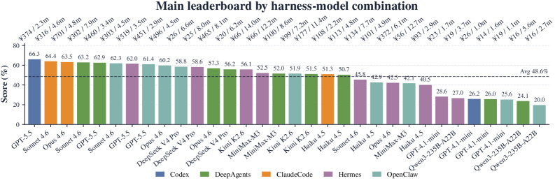
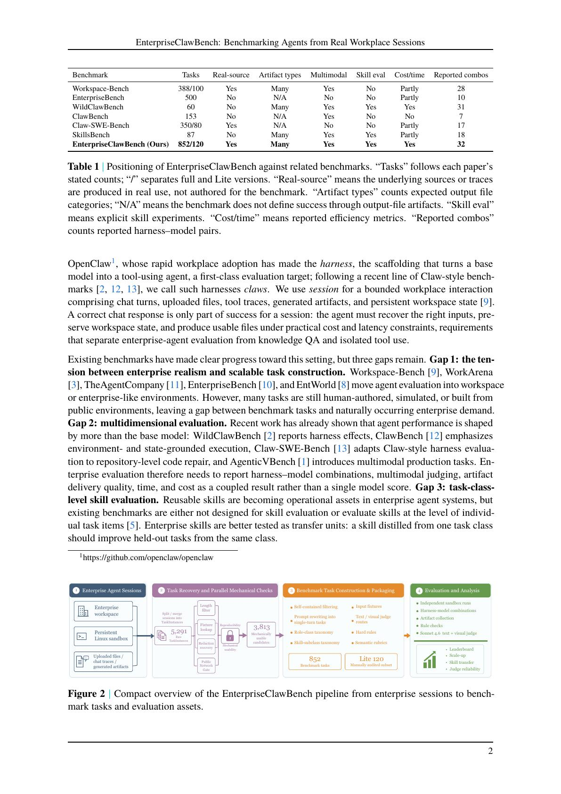
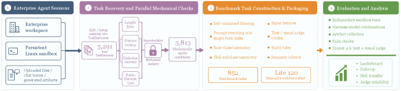
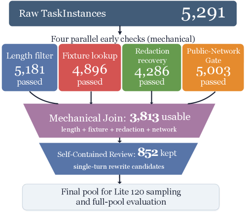
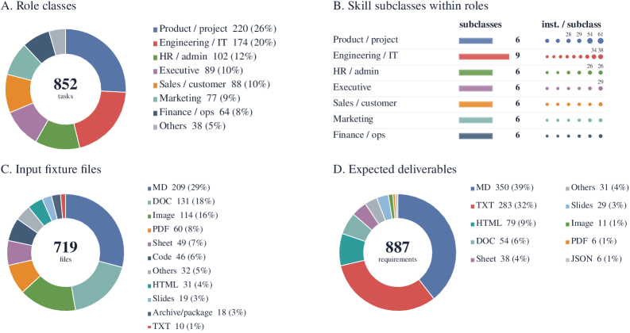
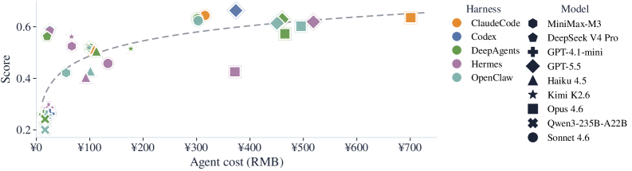
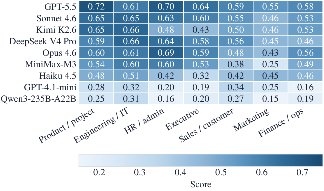
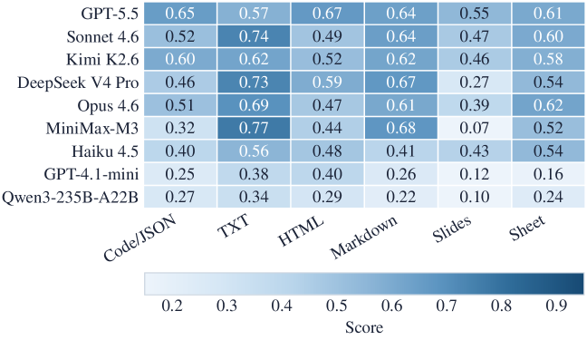
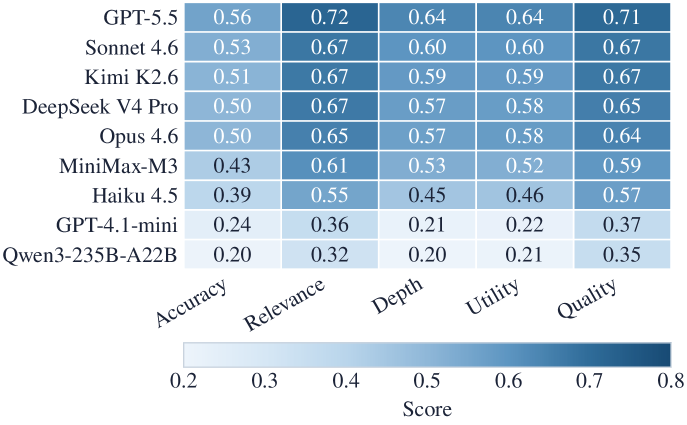
| Model | Score | Text | Visual | Rule |
|---|---|---|---|---|
| GPT-5.5 | 0.766 | 0.813 | 0.642 | 0.959 |
| Sonnet 4.6 | 0.749 | 0.793 | 0.634 | 0.957 |
| Haiku 4.5 | 0.632 | 0.666 | 0.542 | 0.963 |
| GPT-4.1-mini | 0.336 | 0.383 | 0.213 | 0.817 |
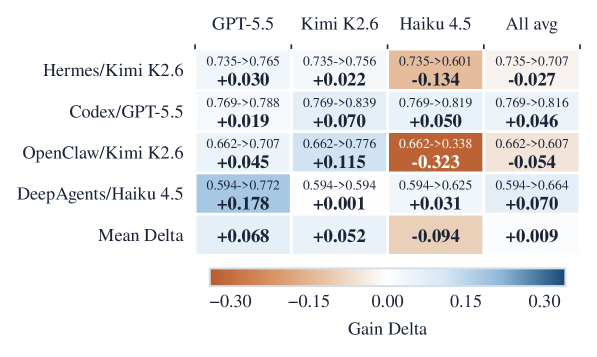
| Scope | n | Human | Sonnet | MAE | Spearman |
|---|---|---|---|---|---|
| Overall | 48 | 0.571 | 0.498 | 0.219 | 0.263 |
| Text | 24 | 0.476 | 0.504 | 0.134 | 0.790 |
| Visual | 24 | 0.666 | 0.492 | 0.303 | -0.259 |
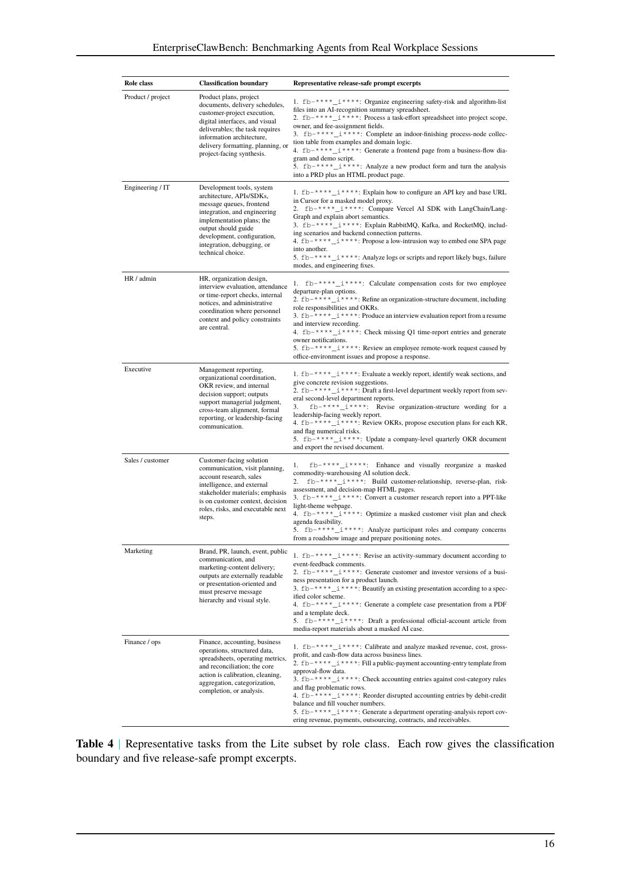
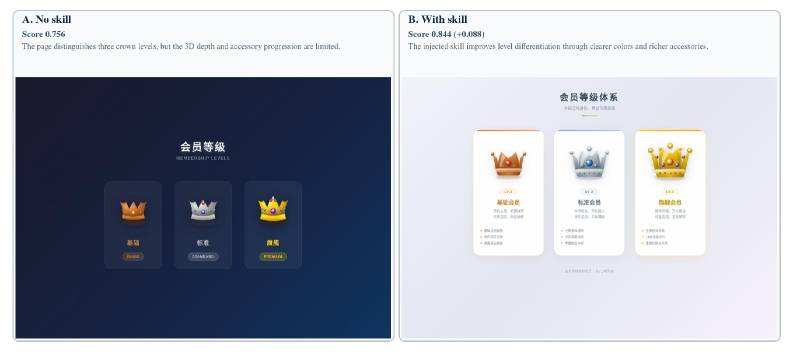
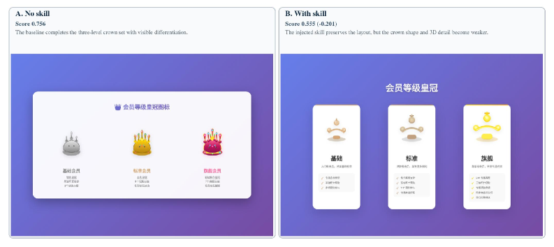
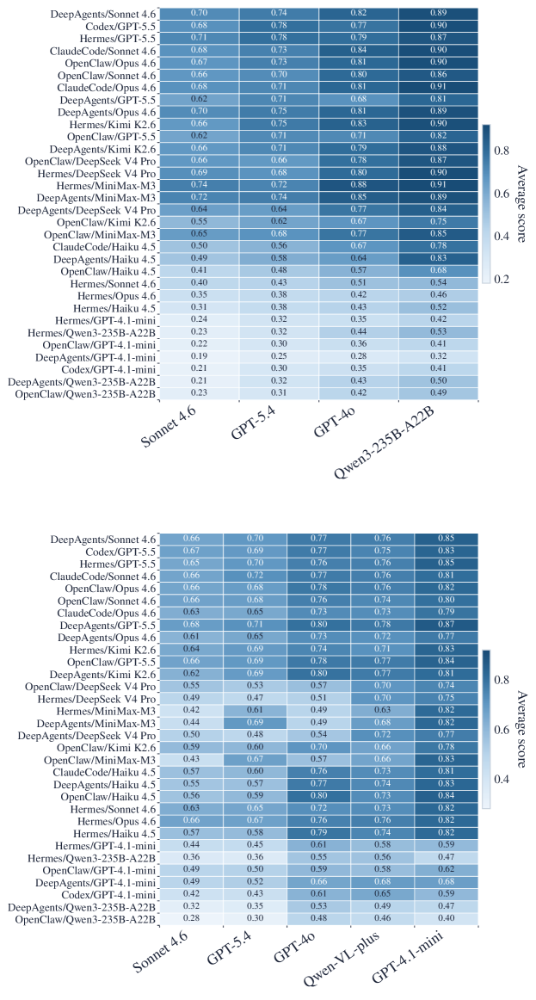
当前只有 2026-06-22 10:21-10:27 CST 的历史快照，距离本次查询约 48 小时，不足严格 72 小时。因此本榜使用“当前 star - 2026-06-22 快照”的可验证代理指标，并按该代理新增数排序；不能解释为严格三日新增。
| 排名 | 项目 | 用途简介 | 当前 Star | 约 48h 新增 | 语言 | 最近更新 |
|---|---|---|---|---|---|---|
| 1 | NousResearch/hermes-agent | 强调长期个性化与持续能力积累的个人 agent。 | 201,039 | +1,981 | Python | 2026-06-24 02:41 UTC |
| 2 | obra/superpowers | Agentic skills framework 与软件开发方法论。 | 237,011 | +1,937 | Shell | 2026-06-24 02:41 UTC |
| 3 | firecrawl/firecrawl | 面向 agent 的网页搜索、抓取与交互 API。 | 138,230 | +1,868 | TypeScript | 2026-06-24 02:38 UTC |
| 4 | farion1231/cc-switch | Claude Code、Codex、OpenCode、OpenClaw、Gemini CLI、Hermes Agent 的跨平台桌面切换与管理工具。 | 107,133 | +1,375 | Rust | 2026-06-24 02:37 UTC |
| 5 | multica-ai/andrej-karpathy-skills | 把 Andrej Karpathy 关于 LLM coding 的观察整理为 CLAUDE.md 风格技能文件。 | 181,059 | +1,290 | 未标明 | 2026-06-24 02:40 UTC |
近三天新建候选中，当前 star 较高的项目包括 bozhouDev/codex-orange-book（586 ★）、HKUDS/AgentSpace（313 ★）、Johell1NS/browser-search（137 ★）、iart-ai/motion-skills（114 ★）。它们作为“新建项目增长代理”记录，但当前值低于上述快照差分榜前五。
执行前已扫描当前线程历史与工作区 /Users/wuyuyang/Documents/Rhythm 下此前生成的 morning-brief*.html，并排除曾在任一 GitHub 板块或论文代码链接出现的 30 个仓库。以下按当前总 star 降序，仅保留与 AI Agent、Agent Skill、coding agent、MCP、agent framework/toolchain 高度相关的项目。
| 排名 | 项目 | 当前 Star | 用途与核心能力 | 为什么值得关注 | 语言 | 最近更新 |
|---|---|---|---|---|---|---|
| 1 | mattpocock/skills | 143,470 | 面向 Claude Code 工作流的工程技能集合。 | Agent Skills 正在从“提示词”变成可复用的工作流资产，该仓库展示了工程师个人技能库的组织方式。 | Shell | 2026-06-24 02:40 UTC |
| 2 | garrytan/gstack | 114,173 | 面向 Claude Code 的 23 个 opinionated tools，覆盖 CEO、设计、工程管理、发布、文档和 QA 等角色。 | 代表“角色化 agent 工具栈”趋势，适合观察个人/小团队如何把 coding agent 扩展为组织级协作系统。 | TypeScript | 2026-06-24 02:40 UTC |
| 3 | modelcontextprotocol/servers | 87,614 | Model Context Protocol 官方/公共服务器集合。 | MCP 是 agent 工具接入的关键接口层，服务器生态决定 agent 可用工具和企业系统集成范围。 | TypeScript | 2026-06-24 02:33 UTC |
| 4 | OpenHands/OpenHands | 78,156 | AI-driven development agent，可执行软件开发任务。 | 是开源 coding agent 领域的核心项目之一，适合与 Codex、Claude Code、OpenCode 等工具横向比较。 | Python | 2026-06-24 02:38 UTC |
| 5 | microsoft/autogen | 59,185 | Microsoft 的 agentic AI programming framework。 | 多智能体编程框架的早期代表项目，仍是 agent 架构、对话式协作和工具调用研究的重要基线。 | Python | 2026-06-24 00:27 UTC |
OpenAI 官方研究案例，介绍 GPT-5 如何辅助免疫学研究人员理解妊娠期间免疫系统变化。与 agent 主题的直接关系弱于 Codex 更新，但属于官方技术/研究应用内容。
面向 Codex 长时间运行任务的工作流指南，强调准备项目上下文、环境、任务边界、验证命令和可交接状态，直接关联 coding agent 的可靠执行。
OpenAI 发布 Daybreak 安全方向内容，关注利用 AI 辅助发现、修复和规模化处理安全问题。
围绕 Daybreak 的开源维护者支持计划，强调 AI 安全工具与开源生态漏洞修补的结合。
| 发布时间 | 标题 | 简介 |
|---|---|---|
| 2026-06-23 18:45 UTC | ChatGPT Futures, Class of 2026: The Next Generation of AI Leaders | ChatGPT Futures 2026 学员对 AI 未来用途的短片，偏生态与教育。 |
| 2026-06-23 11:30 UTC | How Omio is building the future of conversational travel | 客户案例：Omio 使用 ChatGPT、Codex 和 OpenAI API 重构旅行搜索与预订体验。 |
| 2026-06-22 21:06 UTC | Meet the ChatGPT Futures, Class of 2026 | 介绍 ChatGPT Futures 2026 项目和学生构建的 AI 项目。 |
| 2026-06-22 17:45 UTC | How Zendesk CEO Tom Eggemeier goes from Idea to Action | Monday Morning 系列首期，讨论 AI 时代从 idea 到 action 的管理和产品落地。 |
Anthropic 发布 Claude Tag，允许团队在 Slack 频道中 tag @Claude，并把 Claude 连接到选定频道、工具、数据和代码库。文章称 Claude Tag 是 Claude Code 演进的开始，特点包括多人协作、频道上下文记忆、任务分解与计划未来任务。官方页面内嵌视频：Claude Tag 视频。
Anthropic 官方 YouTube RSS 在本次窗口内没有新的公开频道视频；Claude Tag 视频来自 Anthropic 官方文章内嵌链接。
x1.png 至 x12.png；Table 2、Table 3 从 arXiv HTML 表格转写；Table 1、Table 4 使用 PDF 页图。Poppler 渲染 PDF 附录页时对部分中文字体有缺失警告，因此涉及中文原文的页图仅作为视觉定位，准确文本以原始 PDF/HTML 为准。| 仓库 | 2026-06-22 快照 | 2026-06-24 当前 | 代理新增 |
|---|---|---|---|
| NousResearch/hermes-agent | 199,058 | 201,039 | +1,981 |
| obra/superpowers | 235,074 | 237,011 | +1,937 |
| firecrawl/firecrawl | 136,362 | 138,230 | +1,868 |
| farion1231/cc-switch | 105,758 | 107,133 | +1,375 |
| multica-ai/andrej-karpathy-skills | 179,769 | 181,059 | +1,290 |
| affaan-m/ECC | 219,369 | 220,602 | +1,233 |
| anthropics/skills | 153,544 | 154,395 | +851 |
| anomalyco/opencode | 177,031 | 177,834 | +803 |
| browser-use/browser-use | 99,951 | 100,360 | +409 |
| anthropics/claude-code | 133,625 | 134,008 | +383 |
历史扫描排除仓库数：30。包括但不限于 openclaw/openclaw、obra/superpowers、NousResearch/hermes-agent、anthropics/skills、anthropics/claude-code、langchain-ai/langchain、langflow-ai/langflow、langgenius/dify、firecrawl/firecrawl、browser-use/browser-use、google-gemini/gemini-cli 等。
本次新增至已总结仓库集合：mattpocock/skills、garrytan/gstack、modelcontextprotocol/servers、OpenHands/OpenHands、microsoft/autogen。